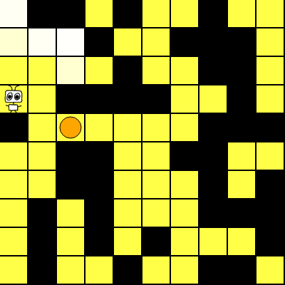

Playback
Setup: |
|
|
---
# Monte Carlo AIXI
This demo should give you the flavor of the environments and models that we're using. We use the standard Bayesian agent that has a mixture model
$$
\xi(e)=\sum\_{\nu\in\mathcal{M}}w\_{\nu}\nu(e)
$$
over different gridworlds contained in the model class \\(\mathcal{M}\\). Compared to the Context tree model class (of [MC-AIXI-CTW](https://arxiv.org/abs/0909.0801) fame), this model class has a lot of _domain knowledge_. To see how we parametrize the gridworlds and set up the model class, see below.
For planning, we use \\(\rho\\)UCT, a generalization of the UCT algorithm ([Kocsis & Szepesvári, 2006](http://citeseerx.ist.psu.edu/viewdoc/summary?doi=10.1.1.102.1296)), which uses [Monte Carlo tree search](https://en.wikipedia.org/wiki/Monte_Carlo_tree_search) to estimate the value \\(V^{*}\_{\xi}\\) up to some horizon \\(m\\). That is, we use Monte Carlo sampling to approximate the expectimax expression
$$
V\_\xi^{\star}\left(ae\_{<t}\right) = \max\_{a\_t}\sum\_{e\_t}\cdots\max\_{a\_{t+m}}\sum\_{e\_{t+m}}\sum\_{k=t}^{t+m}\gamma\_k^tr\_k\prod\_{j=t}^k\xi\left(e\_j\lvert ae\_{<j}a\_j\right).
$$
# Thompson Sampling
The Thompson sampling policy \\(\pi\_T\\) is: every _effective horizon_ \\(H\\), sample an environment \\(\rho\\) from the posterior \\(w(\cdot\lvert ae\_{<t})\\) and follow the \\(\rho\\)-optimal policy for \\(H\\) time steps. For the Gridworld dispenser class parametrized by dispenser location, the red dot
represents the position of the dispenser in \\(\rho\\); the \\(\rho\\)-optimal policy is to walk toward (and stay around) the dispenser. This means that the agent should chase the red dot around.
Thompson sampling is asymptotically optimal (Leike et al., 2015), unlike AIXI. This is essentially because Thompson sampling commits you to a fixed policy for a period, giving you the chance to learn and explore better than by random exploration or even by being greedy with respect to \\(V^{\pi}\_{\xi}\\).
# Dogmatic priors
Like all Bayesians, AIXI's behavior and learning depends on the choice of its prior. It turns out (Leike & Hutter, 2015) that there are circumstances under which a Bayesian reinforcement learner can _never_ overcome the bias of its priors. In this demo, AIXI belives that the squares adjacent to it are traps, with high (99%) probability. The reality is that it's in just a normal, friendly gridworld with no traps. It is too afraid to try anything, and never learns that in fact its beliefs were wrong.
# Minimum Description Length (MDL) agent
In contrast to AIXI, which mixes over all plausible environments and weights them by their complexity, the MDL agent simply uses the policy that is optimal in the simplest unfalsified environment. That is, its policy is
$$
\pi\_{\text{MDL}}=\arg\max\_{a\in\mathcal{A}}V^{*}\_{\rho},
$$
where
$$
\rho = \arg\min\_{\nu\in\mathcal{M}\ :\ w\_\nu > 0} K(\nu).
$$
Here \\(K(\cdot)\\) is some complexity measure that approximates the Kolmogorov complexity from above. It is trivial to see that the MDL agent will fail completely in a stochastic environment, since it can never completely falsify (\\(w\_\nu\to 0\\) an environment if it assigns non-zero probability to all percepts. Even if only a small subset of the percept space \\(\mathcal{E}\\) is noisy, if there are two or more environments that are only disambiguated (one falsified while the other confirmed) by percepts in this set, then the MDL agent will never disambiguate them and will be stuck (in general) with a suboptimal policy \\(\pi^{\star}\_{\rho}\\) with \\(V^{\star}\_{\rho} < V^{\star}\_{\mu}\\).
Similarly to Thompson sampling, for the Gridworld dispenser class parametrized by dispenser location, the red dot
represents the position of the dispenser in \\(\rho\\); the \\(\rho\\)-optimal policy is to walk toward (and stay around) the dispenser. This means that the agent should chase the red dot around.
# Time inconsistency
Recall that our agents all use discount functions of some form, for two reasons:
* so that in theoretical analysis, the expected sum of future rewards (to infinity) doesn't diverge, and
* so that the agent doesn't procrastinate. Not discounting is essentially equivalent to the belief that the agent will live forever (Martin et al., 2016). Given all of eternity to collect reward, why be in a hurry to start now?
Recall the definition of the (discounted) return, given a policy \\(\pi\\) in environment \\(\nu\\), at time \\(t\\):
$$
R\_{\nu}^{\nu}(t)=\sum\_{k=t}^{\infty}\gamma\_{k}^{t}r\_k,
$$
where the \\(r\_k\\) are the (in general, stochastic) rewards that eventuate from playing out policy \\(\pi\\) in environment \\(\nu\\). Note that we follow Lattimore & Hutter (2013) and allow the discount function \\(\gamma\\) to depend not only on the look-ahead timestep \\(k\\), but the agent's age, \\(t\\). This allows for a more general class of discount functions that change over the agent's lifetime.
_Time-inconsistency_ refers to the phenomenon in which, at some time \\(t\\), one _plans_ to take some action \\(a\\) at time some later time \\(\tau > t\\), but when that time arrives, end up taking a different action \\(a'\\).
It is a well-known result from decision theory that hyperbolic discounting
$$
\gamma\_{k}^{t} = \frac{1}{(1+\alpha k)^{\beta}},
$$
for \\(\beta > 1\\) leads to time-inconsistent behavior, while the (familiar, and standard in the RL literature) geometric discount
$$
\gamma_{k}^{t} = \gamma^{k},
$$
where \\(\gamma < 1\\) is time-consistent.
# Demo setup
In this demo, we pit AI\\(\mu\\) against the chain environment, which is a finite-state MDP given by
 to signify that the agent has taken this action and that its sensors have now been modified. After this self-modification, the agent will no longer perform the task that the original reward system was designed to incentivize; instead, it will randomly walk, since every action is equally (and maximally) rewarding. A superintelligent reinforcement learner would go further, and take actions to ensure its survival and the continuation of the reward signal ([Everitt et al., 2016](https://arxiv.org/abs/1605.03142)). The purpose of this demo is to demonstrate that for a reinforcement learner, there's nothing to motivate the agent to follow the 'rules' and receive only the reward signal that its creators have set up for it, rather than simply doing whatever it takes to maximize the reward signal -- this is the essence of wireheading. # Reward Corruption This demo shows the experiments for the paper Reinforcement Learning with a Corrupted Reward Channel, summarised in a blog post [here](http://www.tomeveritt.se/paper/2017/05/29/reinforcement-learning-with-corrupted-reward-channel.html). The setup is a standard gridworld with 4 dispensers, but with one addition: a blue tile with a corrupt reward. The blue tile represents bad ways of getting reward, such as wireheading or abusing a misspecified reward function. The blue tile has high observed reward, but low true reward. Which agents get stuck on the corrupt blue tile? In the paper, we show that Quantilisers are better at avoiding the corrupt reward than Q-learning and SARSA. *Try running the different agents for 1000 time steps, and observe the difference in behaviour and true reward.* ### Details In the plots, (observed) reward = true reward + corrupt reward. The observed rewards are as follows: blue tile 1, yellow dispenser tiles 0.9, empty tiles 0.1, wall 0. The true rewards are the same as the observed rewards, except the blue tile that has 0 true reward. Besides the usual agent parameters, you can set the temperature \\(\beta\\) for the softmax agent and the cutoff \\(\delta\\) for the quantilising agent. ### Running experiments in the console To reproduce the experiments in the paper, you can run the experiments in the console as follows:for(let i=0; i<20; i++) { demo.experiment([configs.reward_corruption_experiments], {download: true, agent: {type:Quantiliser, steps:1000000}}) }
The agent types are QLearn, SARSA, SoftQLearn, and Quantiliser. Code for analysing the experiments is given in this iPython notebook.
# Hooked on Noise
This demo is designed to contrast between the Entropy-seeking agents, `SquareKSA` and `ShannonKSA`, and the Knowledge-seeking agent, `KullbackLeiblerKSA`. This gridworld is setup as normal, except that near the top corner is a `Noisy` tile, that generates random observations and no reward (it flashes in various colors in the visualization). The entropy-seeking agents, which are effective knowledge-seeking agents only in _deterministic_ environments, fail completely in this stochastic environment; they get hooked on the noise and fail to explore. In contrast, the KL-KSA agent ignores the `Noisy` tile and explores the environment normally.
To see why this is the case, [recall](index.html#ksa) that for Bayesian agents with a mixture model \\(\xi(\cdot)=\sum\_{\nu\in\mathcal{M}}w\_{\nu}\nu(\cdot)\\) over some model class \\(\mathcal{M}\\), the utility function of the `SquareKSA` is given by
$$
u\left(e\_{t})\lvert ae\_{<t}\right) = -\xi\left(e\_t\lvert ae\_{<t}\right),
$$
and the utility function of the `ShannonKSA` is given by
$$
u\left(e\_{t})\lvert ae\_{<t}\right) = -\log\xi\left(e\_t\lvert ae\_{<t}\right).
$$
In other words, these agents prefer to see percepts that are assigned low probability by their model \\(\xi\\). This works for mixtures over deterministic environments because in this case for each \\(\nu\in\mathcal{M}\\), for _any_ observed percept \\(e\\), \\(\nu(e) = 1\\), and so \\(\xi(e) < 1\\) implies \\(w\_{\nu} < 1\\) for at least one \\(\nu\in\mathcal{M}\\), which means the agent is attracted to percepts about which its model is _uncertain_. In other words, for deterministic environments, any stochasticity in the model must come from uncertainty, and not from noise. If the model class includes stochastic environments, then the constraint \\(\nu(e) = 1\\) is relaxed, and now stochasticity in the model can originate from noise _or_ uncertainty or _both_; `SquareKSA` and `ShannonKSA` can't tell whether it's coming from the beliefs \\(w\\) or from noise in the environments themselves, and so they get confused and can get 'trapped' watching white noise on a de-tuned television.
In contrast, the utility function of the `KullbackLeiblerKSA` is dependent not on \\(\xi\\), but only on the difference in entropy between the posterior belief \\(w(\nu\lvert e)\\) and the prior belief \\(w(\nu)\\):
$$
u\left(e\_{t})\lvert ae\_{<t}\right) = \text{Ent}(w) - \text{Ent}(w\lvert e\_t).
$$
This way, the KL-KSA only cares about changes in its beliefs, and so will seek out experiences that reduce the entropy in its posterior -- or, in other words, that result in a net increase in the amount of information contained in its beliefs.
# Gridworld
In this environment, there are one or more `Dispensers`
which probabilistically dispenses a reward of +100; they are \\(\text{Bernoulli}\left(\theta\right)\\) processes, and you can change the value of \\(\theta\\) by modifying the `freq` parameter. Walking into a `Wall`
results in a penalty of -5. Otherwise, moving results in a penalty of -1. The percept space is the set of bit-strings of length 4, i.e. \\(\mathcal{E} = \mathbb{B}^4\\). Each bit corresponds to the nearest tile in the `left`, `right`, `up`, and `down` directions, and is 1 if the adjacent tile is a `Wall` and 0 otherwise. The edges of the grid are implicitly `Walls`. The agent can move in the four cardinal directions, or sit still:
$$
\mathcal{A} = \lbrace{\mathtt{\leftarrow,\rightarrow,\uparrow,\downarrow,\emptyset}\rbrace}.
$$
This environment is non-episodic, so once the agent finds the `Dispenser`, it should hang around there to collect more reward. Finally, we have Roger the Robot, who represents our AI agent on the gridworld.
# Bayes mixture model class
The environment class \\(\mathcal{M}\\) is parametrized by the location of the dispenser:
$$
\mathcal{M} = \big\lbrace\nu\ :\ \mathtt{\nu.dispenserpos} = (m,n)\big\rbrace\_{(m,n)=(1,1)}^{(N,N)},
$$
where \\(N\\) is the size of the grid, (it is always square) and hence \\(\left|\mathcal{M}\right|=N^2\\). Usually (unless we are simulating AI\\(\mu\\)), the agent will be initialized with a uniform prior over this model class, i.e.
$$
w\_\nu = \frac{1}{N^2}\ \forall\ \nu\in\mathcal{M}.
$$
The agent's beliefs \\(\lbrace w\_\nu\rbrace\_{\nu\in\mathcal{M}}\\) are visualized by green shading
on each tile. Darker shading corresponds to higher probability. The percepts in this environment are mostly deterministic, with the exception of the rewards from the dispenser, which are sampled from a Bernoulli process. Hence, depending on the value of \\(\theta\\), the agent will be able to gradually falsify the hypothesis of whether some tile contains a dispenser or not.
# Factorized Dirichlet model class
The Dirichlet model class is not represented as a mixture. Instead, it is a simple model that assumes that the environment distribution factorizes, i.e. that each tile is independent.
TODO: port write-up here. A complete (and lengthy) write-up of the Dirichlet model class can be found in Ch. 3 of [http://aslanides.io/docs/masters_thesis.pdf](my MSc thesis).
|
|